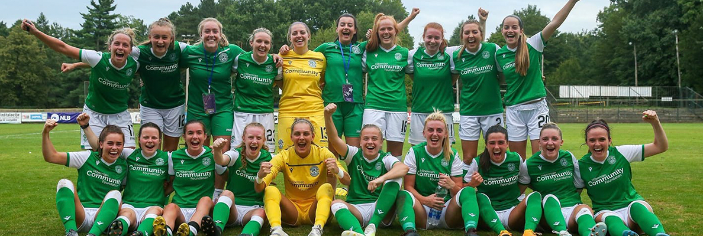

Glasgow City are the current champions of the SWPL. They play their games at Petershill Park in Springburn. Their head coach is Scott Booth. Their captain is Leanne Ross.
Celtic
Celtic are fully professional this season.
They play their games at K Park in East Kilbride.
Their manager is Fran Alonso.
Their captain is Kelly Clark.
Twitter
Forfar Farmington
Forfar Farmington play their games at Station Park in Forfar.
Their head coach is Ryan McConville. Their captain is Nicola Davidson.
Twitter
Glasgow City
Glasgow City are the current champions of the SWPL.
They play their games at Petershill Park in Springburn.
Their head coach is Scott Booth. Their captain is Leanne Ross.
Twitter
Heart of Midlothian
Hearts are a team based in Edinburgh.
They play their games at Oriam, which is Scotland's national
performance centre for sport and is based at Heriot Watt University.
Last season they won SWPL2 and gained promotion to the top flight.
Their manager is Kevin Murphy. Their captain is Mariel Kaney.
Twitter
Hibernian

Hibs are a team based in Edinburgh.
They play their games at Ainslie Park.
Their head coach is Dean Gibson.
Their captain Joelle Murray became their first
professional player this season.
Twitter
Motherwell
Motherwell play their games at Ravenscraig Sports Facility.
Their manager is Ed Wolecki Black. Their captain is Kerry Montgomery.
Twitter
Rangers
Rangers are also fully professional this season.
They play their games at the Rangers Training Centre in Milngavie.
Their managers are Gregory Vignal and Malky Thomson.
Their captain is Clare Gemmell.
Twitter
Spartans
Spartans are a team based in Edinburgh.
They play their games at Ainslie Park.
Their manager is Debbi McCulloch.
Their captain is Alana Marshall.
Twitter